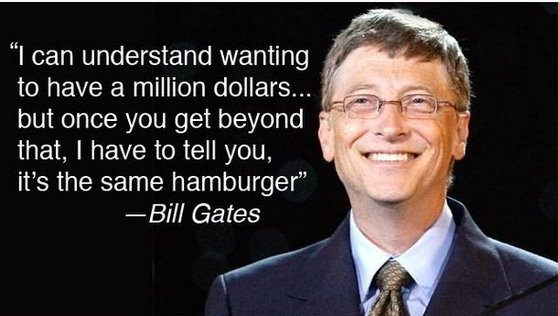

所谓程序员，是指那些能够创造、编写计算机程序的人。不论一个人是什么样的程序员，或多或少，他都在为我们这个社会贡献着什么东西。然而，有些程序员的贡献却超过了一个普通人一辈子能奉献的力量。这些程序员是先驱，受人尊重，他们贡献的东西改变了我们人类的整个文明进程。下面就让我们看看人类历史上最伟大的12位程序员。
1、第一位计算机程序员：埃达·洛夫莱斯Ada Lovelace

埃达·洛夫莱斯，原名奥古斯塔·埃达·拜伦，是著名英国诗人拜伦之女。数学爱好者，被后人公认为第一位计算机程序员。
在1842年与1843年期间，埃达花了9个月的时间翻译意大利数学家路易吉·米那比亚讲述查尔斯·巴贝奇计算机分析机的论文。在译文后面，她增加了许多注记，详细说明用该机器计算伯努利数的方法，被认为是世界上第一个计算机程序；因此，埃达也被认为是世界上第一位程序员。不过，有传记作者也因为部份的程序是由巴贝奇本人所撰，而质疑埃达在电脑程序上的原创性。
埃达的文章创造出许多巴贝奇也未曾提到的新构想，比如埃达曾经预言道：'这个机器未来可以用来排版、编曲或是各种更复杂的用途。'
1852年，埃达为了治疗子宫颈癌，却因此死于失血过多，年仅36岁。她死后一百年，于1953年，埃达之前对查尔斯·巴贝奇的《分析机概论》所留下的笔记被重新公布，并被认为对现代计算机与软件工程造成了重大影响。
2、Pascal之父：尼克劳斯·维尔特Niklaus Wirth

尼克劳斯·埃米尔·维尔特，生于瑞士温特图尔，是瑞士计算机科学家。
从1963年到1967年，他成为斯坦福大学的计算机科学部助理教授，之后又在苏黎世大学担当相同的职位。1968年，他成为苏黎世联邦理工学院的信息学教授，又往施乐帕洛阿尔托研究中心进修了两年。
他是好几种编程语言的主设计师，包括Algol W，Modula，Pascal，Modula-2，Oberon等。
他亦是Euler语言的发明者之一。1984年他因发展了这些语言而获图灵奖。他亦是Lilith电脑和Oberon系统的设计和运行队伍的重要成员。
他的文章Program Development by Stepwise Refinement视为软件工程中的经典之作。他写的一本书的书名Algorithms + Data Structures = Programs（算法+数据结构=程序）是计算机科学的名句。
3、微软创始人：比尔·盖茨Bill Gates

威廉·亨利·"比尔"·盖茨三世，是一名美国著名企业家、投资者、软件工程师、慈善家。早年，他与保罗·艾伦一起创建了微软公司，曾任微软董事长、CEO和首席软件设计师，并持有公司超过8%的普通股，也是公司最大的个人股东。
4、Java之父：詹姆斯·高斯林James Gosling

詹姆斯·高斯林，出生于加拿大，软件专家，Java编程语言的共同创始人之一，一般公认他为"Java之父"。
在他12岁的时候，他已能设计电子游戏机，帮忙邻居修理收割机。大学时期在天文系担任程式开发工读生，1977年获得了加拿大卡尔加里大学计算机科学学士学位。1981年开发在Unix上运行的Emacs类编辑器Gosling Emacs（以C语言编写，使用Mocklisp作为扩展语言）。1983年获得了美国卡内基梅隆大学计算机科学博士学位，博士论文的题目是："The Algebraic Manipulation of Constraints"。毕业后到IBM工作，设计IBM第一代工作站NeWS系统，但不受重视。后来转至Sun公司。1990年，与Patrick Naughton和Mike Sheridan等人合作"绿色计划"，后来发展一套语言叫做"Oak"，后改名为Java。1994年底，James Gosling在硅谷召开的"技术、教育和设计大会"上展示Java程式。2000年，Java成为世界上最流行的电脑语言。
5、Python之父：吉多·范罗苏姆Guido van Rossum

吉多·范罗苏姆是一名荷兰计算机程序员，他作为Python程序设计语言的作者而为人们熟知。在Python社区，吉多·范罗苏姆被人们认为是"仁慈的独裁者（BDFL）"，意思是他仍然关注Python的开发进程，并在必要的时刻做出决定。
2002年，在比利时布鲁塞尔举办的自由及开源软件开发者欧洲会议上，吉多·范罗苏姆获得了由自由软件基金会颁发的2001年自由软件进步奖。2003年五月，吉多获得了荷兰UNIX用户小组奖。2006年，他被美国计算机协会（ACM）认定为著名工程师。
6、B语言、C语言和Unix创始人：肯·汤普逊Ken Thompson

肯尼斯·蓝·汤普逊，小名为肯·汤普逊，生于美国新奥尔良，计算机科学学者与软件工程师。他与丹尼斯·里奇设计了B语言、C语言，创建了Unix和Plan 9操作系统，他也是编程语言Go的共同作者。与丹尼斯·里奇同为1983年图灵奖得主。
肯·汤普逊的贡献还包括了发展正规表示法，写作了早期的电脑文字编辑器QED与ed，定义UTF-8编码，以及发展电脑象棋。
7、现代计算机科学先驱：高德纳Donald Knuth

唐纳德·尔文·克努斯，出生于美国密尔沃基，著名计算机科学家，斯坦福大学计算机系荣誉退休教授。高德纳教授为现代计算机科学的先驱人物，创造了算法分析的领域，在数个理论计算机科学的分支做出基石一般的贡献。在计算机科学及数学领域发表了多部具广泛影响的论文和著作。1974年图灵奖得主。
高德纳最为人知的事迹是，他是《计算机程序设计艺术》（The Art of Computer Programming）的作者。此书是计算机科学界最受高度敬重的参考书籍之一。此外还是排版软件TEX和字体设计系统Metafont的发明人。提出文学编程的概念，并创造了WEB与CWEB软件，作为文学编程开发工具。
8、《C程序设计语言》的作者：布莱恩·柯林汉Brian Kernighan

布莱恩·威尔森·柯林汉，生于加拿大多伦多，加拿大计算机科学家，曾服务于贝尔实验室，为普林斯顿大学教授。他曾参与Unix的研发，也是AMPL与AWK的共同创造者之一。
与丹尼斯·里奇共同写作了C语言的第一本著作《C程序设计语言》之后，他的名字开始为人所熟知。他也创作了许多Unix上的程式，包括在Version 7 Unix上的ditroff与cron。
9、互联网之父：蒂姆·伯纳斯-李Tim Berners-Lee

蒂莫西·约翰·伯纳斯-李爵士，昵称为蒂姆·伯纳斯-李（Tim Berners-Lee），英国计算机科学家。他是万维网的发明者，麻省理工学院教授。1990年12月25日，罗伯特·卡里奥在CERN和他一起成功通过Internet实现了HTTP代理与服务器的第一次通讯。
伯纳斯-李为关注万维网发展而创办的组织，万维网联盟的主席。他也是万维网基金会的创办人。伯纳斯-李还是麻省理工学院计算机科学及人工智能实验室创办主席及高级研究员。同时，伯纳斯-李是网页科学研究倡议会的总监。最后，他是麻省理工学院集体智能中心咨询委员会成员。
2004年，英女皇伊丽莎白二世向伯纳斯-李颁发大英帝国爵级司令勋章。2009年4月，他获选为美国国家科学院外籍院士。在2012年夏季奥林匹克运动会开幕典礼上，他获得了"万维网发明者"的美誉。伯纳斯-李本人也参与了开幕典礼，在一台NeXT计算机前工作。他在Twitter上发表消息说："这是给所有人的"，体育馆内的LCD光管随即显示出文字来。
10、C++之父：比雅尼·斯特劳斯特鲁普Bjarne Stroustrup

比雅尼·斯特劳斯特鲁普，生于丹麦奥胡斯郡，计算机科学家，德州农工大学工程学院的计算机科学首席教授。他以创造C++编程语言而闻名，被称为"C++之父"。
用斯特劳斯特鲁普他本人的话来说，自己"发明了C++，写下了它的早期定义并做出了首个实现……选择制定了C++的设计标准，设计了C++主要的辅助支持环境，而且负责处理C++标准委员会的扩展提案。"他还写了一本《C++程序设计语言》，它被许多人认为是C++的范本经典，目前是第四版（于2013年5月19日出版），最新版中囊括了C++11所引进的一些新特性。
11、Linux之父：林纳斯·托瓦兹Linus Torvalds

林纳斯·本纳第克特·托瓦兹，生于芬兰赫尔辛基市，拥有美国国籍。他是Linux内核的最早作者，随后发起了这个开源项目，担任Linux内核的首要架构师与项目协调者，是当今世界最著名的电脑程序员、黑客之一。他还发起了Git这个开源项目，并为主要的开发者。
林纳斯在网上邮件列表中也以火暴的脾气著称。例如，有一次与人争论Git为何不使用C++开发时与对方用"放屁"（原文为"bullshit"）互骂。他更曾以"一群自慰的猴子"（原文为"OpenBSD crowd is a bunch of masturbating monkeys"）来称呼OpenBSD团队。
2012年6月14日，托瓦兹在出席芬兰的阿尔托大学所主办的一次活动时称Nvidia是他所接触过的"最烂的公司"( the worst company）和"最麻烦的公司"（the worst trouble spot)，因为Nvidia一直没有针对Linux平台发布任何官方的Optimus支持，随后托瓦兹当众对着镜头竖起了中指，说"Nvidia，操你的!"（So, Nvidia, fuck you!）。
12、C语言和Unix之父：丹尼斯·里奇Dennis Ritchie

丹尼斯·麦卡利斯泰尔·里奇，生于美国纽约州布朗克斯维尔（Bronxville），著名的美国计算机科学家，对C语言和其他编程语言、Multics和Unix等操作系统的发展做出了巨大贡献。在技术讨论中，他常被称为dmr，这是他在贝尔实验室的用户名称（username）。
丹尼斯·里奇与肯·汤普逊两人开发了C语言，并随后以之开发出了Unix操作系统，而C语言和Unix在电脑工业史上都占有重要的地位：C语言至今在开发软件和操作系统时依然是非常常用，且它对许多现代的编程语言（如C++、C#、Objective-C、Java和JavaScript）也有着重大影响；而在操作系统方面Unix也影响深远，今天市场上有许多操作系统是基于Unix衍生而来（如AIX与System V等），同时也有不少系统（通称类Unix系统）借鉴了Unix的设计思想（如Solaris、Mac OS X、BSD、Minix与Linux等），甚至以Microsoft Windows操作系统与Unix相竞争的微软也为他们的用户和开发者提供了与Unix相容的工具和C语言编译器。
来源：http://www.vaikan.com/12-greatest-programmers-of-all-time/